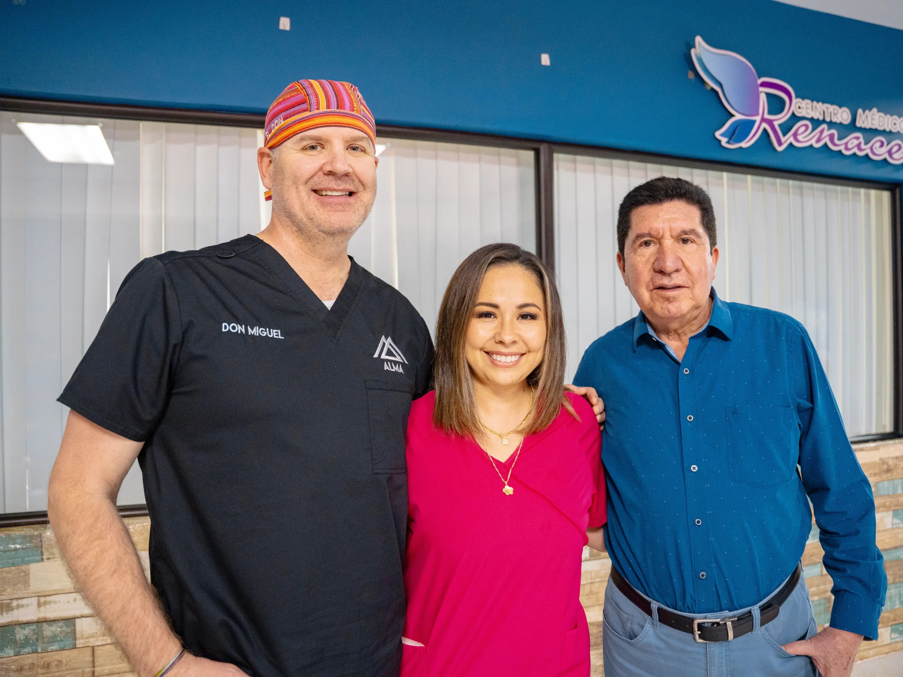
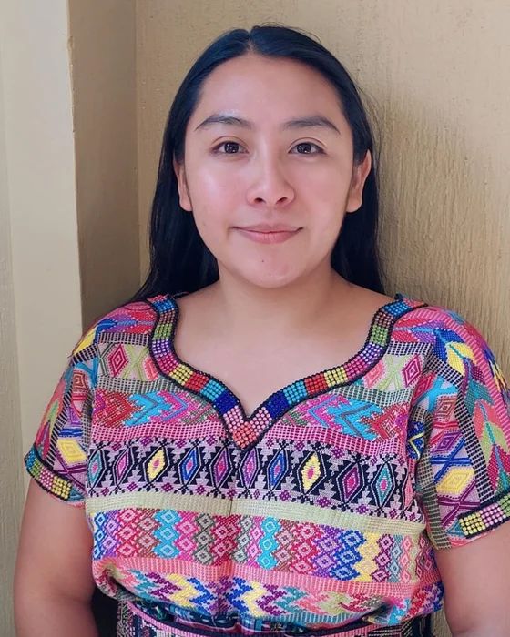
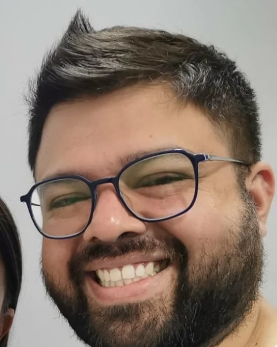
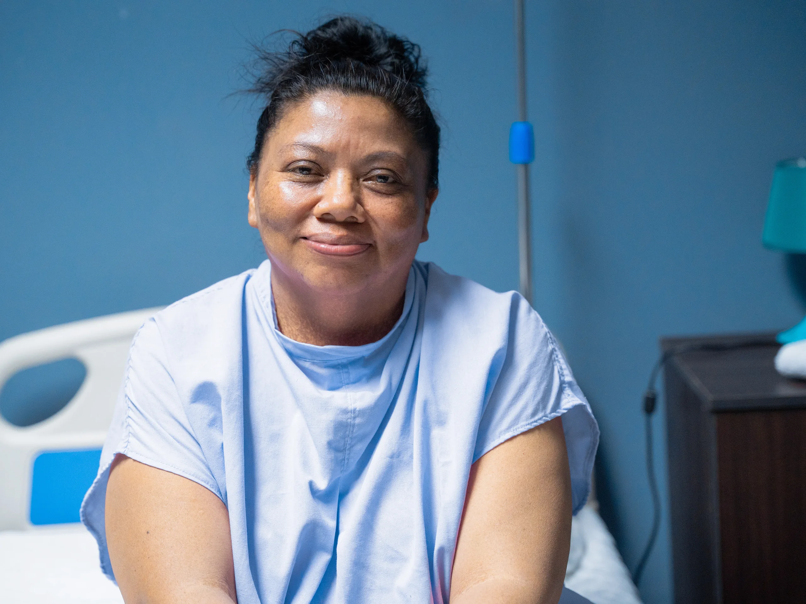
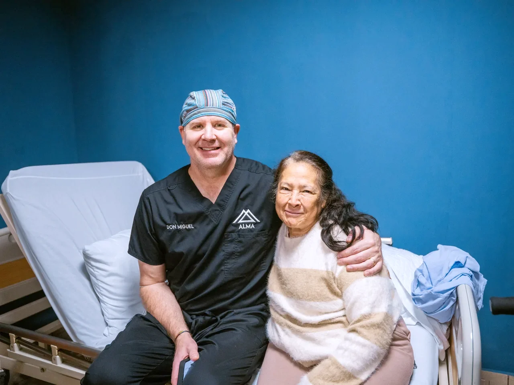

Los socios locales lideran
Operamos con cirujanos guatemaltecos en el Centro Médico Renacer y apoyamos al personal local todo el año, para que la atención continúe cuando regresamos a casa.

Nuestra historia
Fundada en 2018 · Coeur d'Alene, Idaho
Todo comenzó con un viaje en 2007. Mike Oswald, un CRNA de Coeur d'Alene, se unió a una misión médica en Guatemala y siguió regresando. Cada vez veía lo mismo: médicos guatemaltecos capaces y pacientes esperando una cirugía, frenados por la falta de personal, medicamentos e instrumental. En 2018, él y la oftalmóloga Dra. Vicky Loza fundaron ALMA para cerrar esa brecha, enviando equipos voluntarios a trabajar junto a médicos locales que atienden a comunidades indígenas.
Desde 2018, los equipos quirúrgicos voluntarios de ALMA han atendido con seguridad a cientos de pacientes que no tenían a dónde acudir. Hoy ALMA realiza tres misiones quirúrgicas al año en Sololá, Quetzaltenango, Ciudad de Guatemala y Antigua. Entre misiones apoyamos una escuela de educación especial y proyectos comunitarios para familias indígenas. Operamos con muy pocos gastos y sin personal pagado en EE. UU., así que cada donación rinde mucho.
En sus palabras
Te cambia la vida.
Mike OswaldRevista Kootenai Health, 2022 (traducido)
“Los pacientes quedan en listas de espera, pero la mitad de los centros de salud no tienen el personal, los medicamentos ni el instrumental que necesitan.”
Mike Oswald, CRNA, fundador de ALMARevista Kootenai Health, 2022 (traducido)
“Uno regresa renovado.”
Dr. Tom deTar, otorrinolaringólogo, tres misiones con ALMARevista Kootenai Health, 2022 (traducido)
Nuestro camino

Mike Oswald, CRNA, de Anesthesia Associates of Coeur d'Alene, comienza a atender pacientes en Guatemala.
Mike Oswald y la Dra. Vicky Loza fundan ALMA para unir a voluntarios, incluido personal médico de Kootenai Health, con el equipo médico de una clínica en Xela.
En su primer viaje con ALMA, el Dr. Patrick Mullen opera a Ebelinda, una niña de dos años y medio que nació con sindactilia (dedos unidos) en ambas manos.
Coeur d'Alene sale a bailar por Guatemala, y el evento se convierte en tradición anual.
Los donantes recaudan $36,243, muy por encima de la meta de $25,000.
Otorrinolaringología y cirugía general en abril; artroscopia, gastroenterología y ginecología en junio; y reemplazo articular en octubre.
Cómo trabajamos
Operamos con cirujanos guatemaltecos en el Centro Médico Renacer y apoyamos al personal local todo el año, para que la atención continúe cuando regresamos a casa.
Equipos quirúrgicos completos, anestesiólogos y enfermeras de recuperación viajan juntos, para que cada paciente reciba la atención que querríamos para nuestras propias familias.
Sin personal pagado en EE. UU. y con gastos mínimos, tu donación va casi por completo a la atención directa en Guatemala.


Nuestra misión
ALMA se esfuerza por brindar atención médica de calidad a las zonas desatendidas de Guatemala. Mediante el alcance comunitario y la colaboración con profesionales locales, ALMA busca resultados positivos y eficaces para cada persona que atiende.
Áreas de enfoque
Cirugías y procedimientos clínicos para poblaciones rurales y vulnerables en regiones como Sololá y otras partes de Guatemala.
Alianzas directas con médicos, enfermeras y especialistas regionales locales para una capacitación mutua y un apoyo comunitario sostenible.
Una atención integral desde la admisión, empatía y apoyo a la recuperación a largo plazo, junto con los procedimientos físicos.
Conoce a nuestro equipo
El equipo de ALMA en Guatemala y EE. UU. trabaja todo el año para que cada semana de misión sea segura y cada paciente reciba atención después de que nos vamos.

Presidente, Fundador

Directora

Fundadora, Oftalmóloga

Trabajadora social

Cirujano general

Cirujano endocrino

Mercadeo y publicidad

Coordinadora de enfermería
Conductor

Dentista

Cirujano ortopedista

Abogado y miembro de la junta
Alineados con el American College of Surgeons
La forma de trabajar de ALMA nació de años de viajes a Guatemala, antes de haber leído lo que el American College of Surgeons ha escrito sobre la cirugía global ética. Cuando lo hicimos, descubrimos que habíamos llegado por nuestra cuenta a los mismos principios.
“Alianzas equitativas centradas en la comunidad, basadas en las necesidades y colaborativas.” Fuente
Trabajamos codo a codo con médicos y enfermeras guatemaltecos, enseñando y aprendiendo unos de otros.
Advierte sobre equipos visitantes que trabajan sin “participación de los proveedores locales y de la comunidad”. Fuente
Cada paciente quirúrgico es evaluado y preparado antes de la cirugía por cirujanos guatemaltecos locales.
Advierte que operar “sin el plan postoperatorio adecuado puede causar daño”. Fuente
Cirujanos y proveedores de anestesia locales dan seguimiento a cada paciente cuando el equipo regresa a casa.
ACS H.O.P.E. busca “intercambiar conocimiento entre fronteras y especialidades”. Fuente
Formación continua, un curso electivo en la facultad de medicina y estancias largas para estudiantes.
Señala los riesgos de “la falta de transparencia en el financiamiento”. Fuente
Sin personal pagado en EE. UU., gastos administrativos mínimos y costos lo más bajos posible.
ALMA no está afiliada ni respaldada por el American College of Surgeons. Las citas provienen del artículo del ACS Bulletin “Globalization of Healthcare Creates Evolving Ethical Dilemmas” (abril de 2023) y de la página del programa ACS H.O.P.E. Las traducciones al español son nuestras.
Por qué existe ALMA
En el altiplano de Guatemala, muchas clínicas no tienen el personal, los medicamentos ni el instrumental que necesitan. ALMA llena ese vacío con cirujanos, anestesiólogos y enfermeras voluntarios que sirven junto a profesionales guatemaltecos, y los sigue apoyando todo el año.


Lo que hacemos

Equipos quirúrgicos de EE. UU. operan junto a cirujanos guatemaltecos, tres veces al año.
Ver las misiones
La cirugía de cataratas devuelve a los pacientes su independencia y su sustento. Después de la cirugía, los donantes reciben un informe y una foto de nuestra trabajadora social.
Apoyar
Chequeos y atención dental para niños en comunidades donde es difícil acceder a un dentista.
Ver el programa dentalÚtiles y un área de juegos para la Escuela Vuelta Grande, y apoyo a una escuela de educación especial.
Dona: útiles y juegos escolaresCapacitación continua que fortalece a médicos, enfermeras y personal guatemalteco.
Apoyar
Sirve en un equipo quirúrgico, patrocina a un voluntario o dona para que un paciente más pueda caminar, ver o comer sin dolor.